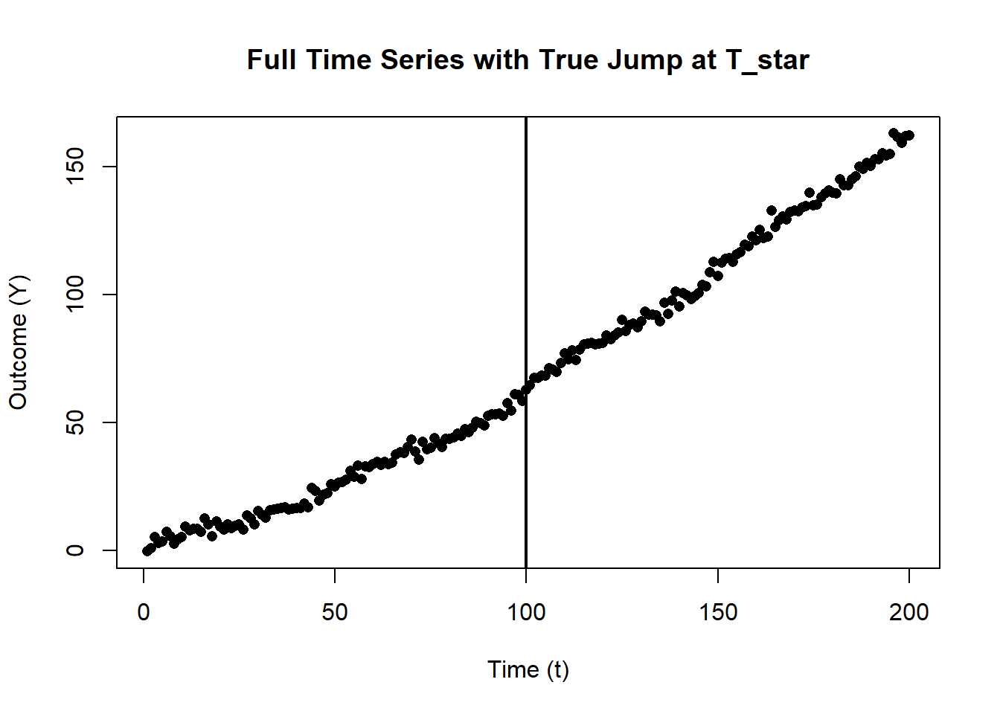
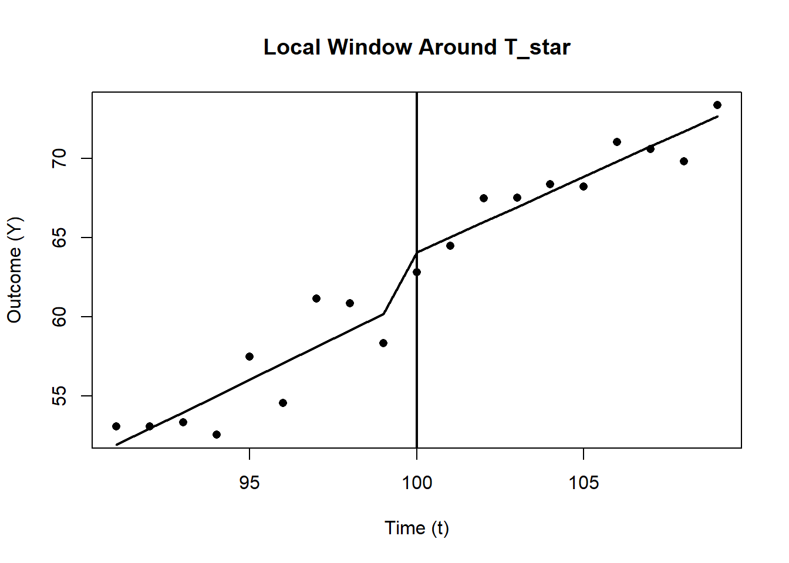
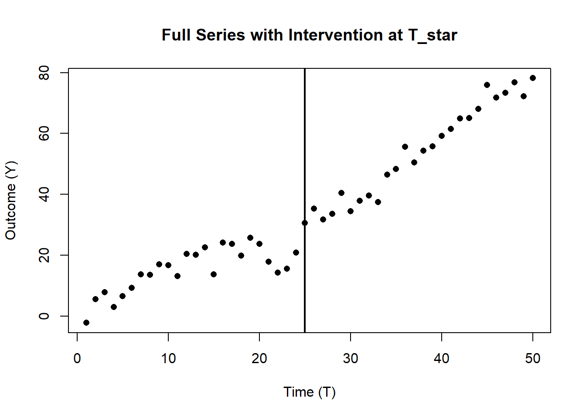
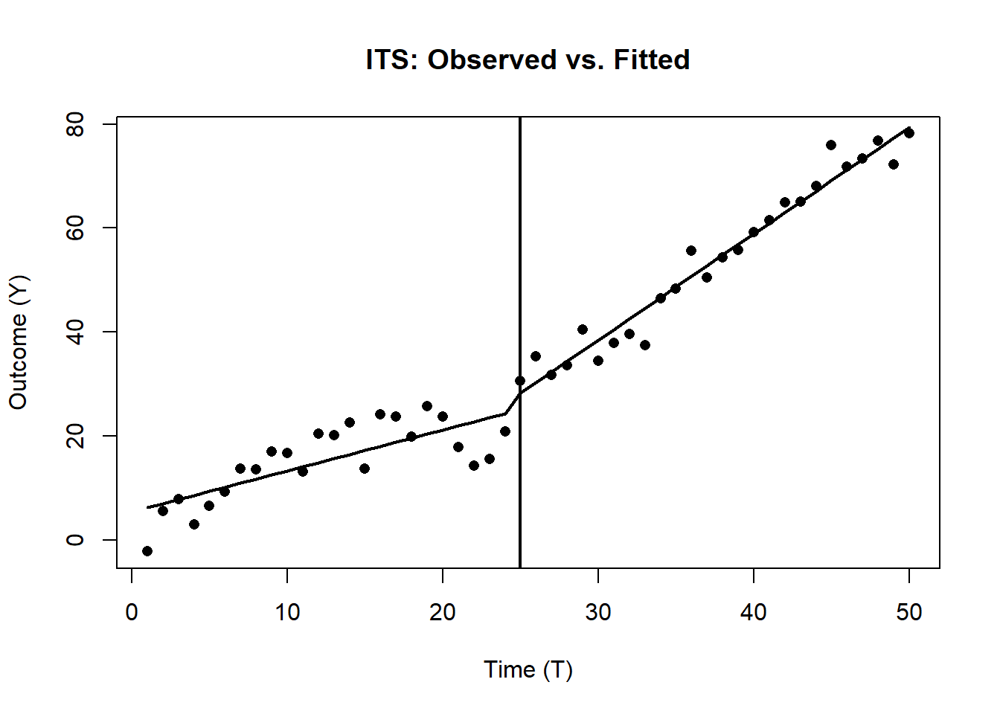
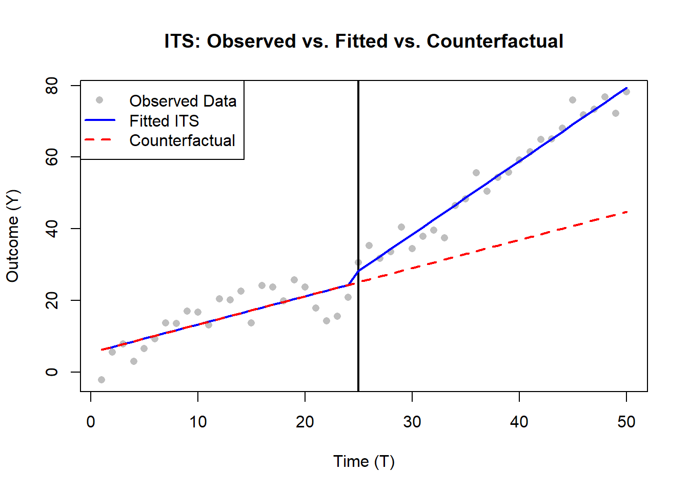
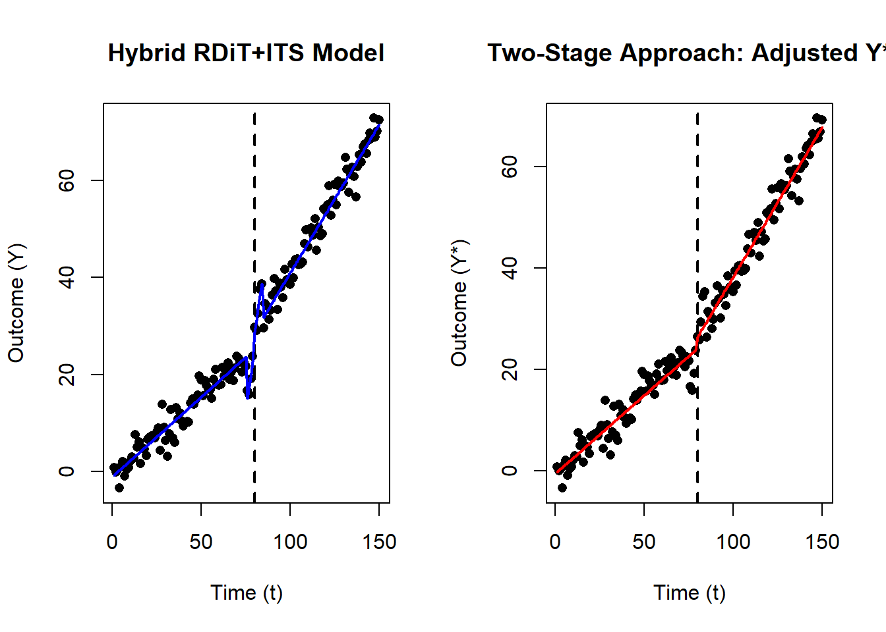

37 Temporal Discontinuity Designs
When evaluating the impact of a policy, intervention, or treatment that begins at a known point in time, time becomes the running variable. In such settings, two widely used quasi-experimental methods offer powerful tools for causal inference:
Both approaches exploit a temporal cutoff (i.e., the moment when an intervention begins) to identify changes in outcomes attributable to the treatment. However, they differ in how they conceptualize and model the data around that time point, as well as in the strength of assumptions required for valid inference.
Despite their differences, RDiT and ITS are united by several key features:
- Temporal Running Variable: time replaces the traditional cross-sectional score as the variable used to determine treatment status.
- Known Intervention Start Date: both require a clearly defined moment when the policy or treatment began.
- No Confounding Events: both assume no other major changes occurred simultaneously with the intervention that could affect outcomes.
- No Cross-sectional Control Group: these designs are especially valuable when there is no suitable untreated group, making methods like difference-in-differences infeasible.
RDiT adapts the logic of standard RD to the time dimension, using the policy implementation date as the cutoff.
- Conceptualization: individuals or observations just before and after the intervention date are assumed to be comparable, akin to local randomization in time.
- Estimation: typically modeled using local polynomial regression on either side of the cutoff date.
- Strengths: provides localized causal inference near the intervention date; flexible with respect to functional form.
- Limitations: sensitive to time trends and autocorrelation. Requires dense temporal data (e.g., daily or weekly) to support the assumption of continuity around the cutoff.
Example: analyzing the effect of a new digital ad campaign launched nationwide on July 1st by comparing user engagement on June 30 vs. July 1.
ITS adopts a broader, time-series approach, modeling pre- and post-intervention trends explicitly.
- Conceptualization: the intervention is viewed as an interruption in an ongoing time series process.
- Estimation: involves fitting segmented regressions with separate intercepts and slopes before and after the policy.
- Strengths: useful when interested in long-term trends and sustained treatment effects.
- Limitations: requires strong assumptions about the functional form of time trends and absence of time-varying confounders. Less credible when data are sparse or highly aggregated (e.g., annual).
Example: evaluating the impact of a minimum wage increase on monthly employment rates over a 5-year period.
Table 37.1 shows when to use RDiT vs. ITS
| Feature | RDiT | ITS |
|---|---|---|
| Focus | Local neighborhood around \(T^*\) | Entire time series (long pre- and post-data) |
| Effect Model | Assumes a sharp, immediate jump | Can capture abrupt or gradual changes (level & slope) |
| Method | Local polynomial regression around cutoff | Segmented regression using the full series |
| Key Assumption | Units just before and after cutoff are comparable | Trend would continue unchanged in absence of intervention |
| Bandwidth / Window | Uses a bandwidth \(h\) around \(T^*\) | Typically uses the entire pre/post period |
| Data Requirement | High-resolution near \(T^*\) | Sufficient pre-/post- observations to establish trends |
These methods are especially useful when:
- Policy implemented at a fixed date for all units (e.g., a national tax reform).
- Policy phased in at different times across units (e.g., state-by-state healthcare rollouts).
- No valid cross-sectional comparison group exists, ruling out difference-in-differences or matching.
In summary: When time is the assignment mechanism, RDiT and ITS allow researchers to recover causal estimates using pre/post timing alone. RDiT provides a more experimental design under stronger data density and local assumptions, while ITS offers a broader, long-run perspective with greater dependence on correct model specification.
Later sections will explore estimation strategies, assumptions, and diagnostics for both approaches.
37.1 Regression Discontinuity in Time
Regression Discontinuity in Time is a special case of a Regression Discontinuity design where the “forcing variable” is time itself. At an exact cutoff time \(T^*\), a policy or intervention is implemented. We compare observations just before and just after \(T^*\) to estimate the causal effect.
Key assumptions for RDiT:
- Sharp assignment: The intervention precisely begins at time \(T^*\).
- Local continuity: Units just before and after \(T^*\) are comparable except for treatment status.
-
Continuity of Time-Varying Confounders
- The fundamental assumption in RDiT is that unobserved factors affecting the outcome evolve smoothly over time.
- If an unobserved confounder changes discontinuously at the cutoff date, RDiT will attribute the effect to the intervention incorrectly.
- No other confounding interventions that begin exactly at \(T^*\).
-
No Manipulation of the Running Variable (Time)
- Unlike standard RD, where subjects may manipulate their assignment variable (e.g., test scores), time cannot be directly manipulated.
- However, strategic anticipation of a policy (e.g., firms adjusting behavior before a tax increase) can create bias.
Using a local polynomial approach near \(T^*\):
\[ Y_t = \alpha_0 + \alpha_1 (T_t - T^*) + \tau D_t + \alpha_2 (T_t - T^*) D_t + \epsilon_t, \]
for \(|T_t - T^*| < h\), where:
- \(Y_t\) is the outcome at time \(t\).
- \(T_t\) is the time index (running variable).
- \(T^*\) is the cutoff (intervention) time.
- \(D_t = 1\) if \(t \ge T^*\) and 0 otherwise.
- \(h\) is a chosen bandwidth such that only observations close to \(T^*\) are used.
- \(\tau\) represents the treatment effect (the discontinuity at \(T^*\)).
Because RDiT focuses on a local window around \(T^*\), it is best when you expect an immediate jump at the cutoff and when observations near the cutoff are likely to be similar except for the treatment (Table 37.2).
| Criterion | Standard RD | RDiT |
|---|---|---|
| Running Variable | Cross-sectional (e.g., test score) | Time (e.g., policy implementation date) |
| Treatment Assignment | Based on threshold in \(X\) | Based on threshold in \(T^*\) |
| Assumptions | No sorting, smooth potential outcomes | No anticipatory behavior, smooth confounders |
| Key Challenge | Manipulation of \(X\) (sorting) | Serial correlation, anticipation effects |
37.1.1 Estimation and Model Selection
In Regression Discontinuity in Time, model selection is critical to accurately estimate the causal effect at the cutoff \(T^*\). Unlike Interrupted Time Series, which models long-term trends before and after an intervention, RDiT relies on local comparisons around the cutoff. The job of the analyst, then, is to choose a window narrow enough that the comparison is genuinely local but wide enough that there are sufficient observations on each side to identify the jump. Two knobs govern that trade-off, and the choices interact: a narrower bandwidth puts less weight on functional-form assumptions but limits the polynomial order that can be reliably estimated, while a wider bandwidth lets you fit more flexible curves but reintroduces the long-run trends RDiT is supposed to sidestep. The default starting point is a narrow window with a low-order polynomial, expanded only if visual inspection or sensitivity checks demand it.
- A narrow bandwidth (\(h\)) should be chosen to focus on observations just before and after \(T^*\).
- Polynomial order selection should be guided by the Bayesian Information Criterion to avoid overfitting.
- Higher-order polynomials can introduce spurious curvature, so local linear or quadratic models are preferred.
Because RDiT uses time-series data, the second concern is serial correlation in the residuals. Standard OLS errors will understate sampling variability whenever shocks at one time point spill into the next, which is the rule rather than the exception in environmental, financial, and behavioral series. Two corrections are commonly used, and the right choice depends on the suspected structure of the dependence:
- Clustered Standard Errors: Adjusts for within-time correlation, ensuring valid inference.
- Newey-West HAC Standard Errors: Corrects for heteroskedasticity and serial correlation over time.
The harder problem is that serial correlation can arise in two distinct places, and the diagnostics differ accordingly:
- If serial dependence exists in \(\epsilon_{it}\) (the error term), there is no straightforward fix (introducing a lagged dependent variable may mis-specify the model).
- If serial dependence exists in \(y_{it}\) (the outcome variable):
- With long windows, identifying the precise treatment effect becomes challenging.
- Including a lagged dependent variable can help, though bias may still arise from time-varying treatment effects or over-fitting.
In practice, the boundary between these two cases is rarely clean, which is why HAC inference (described more fully in Section 37.2 under Handling Autocorrelation) tends to be the safer default for reporting, with parametric error models reserved for cases where the dependence structure is strong and well understood.
The three model variants below progress from the simplest credible specification to richer forms that buy flexibility at the cost of additional assumptions. They are best read as a ladder rather than a menu: most applied work starts at the bottom rung and only climbs when the data warrant it.
- Baseline Local Linear Model (Preferred in RDiT)
\[ \begin{aligned}Y_t = \alpha_0 &+ \alpha_1 (T_t - T^*) + \tau D_t \\&+ \alpha_2 (T_t - T^*) D_t + \epsilon_t, \quad \text{for } |T_t - T^*| < h\end{aligned} \]
where:
\(Y_t\) is the outcome of interest at time \(t\).
\(T_t\) is the time forcing variable.
\(T^*\) is the cutoff time when the policy/intervention occurs.
\(D_t\) is the treatment indicator:
\(D_t = 1\) if \(t \geq T^*\) (post-intervention).
\(D_t = 0\) if \(t < T^*\) (pre-intervention).
\(h\) is the bandwidth, restricting analysis to observations close to \(T^*\).
\(\tau\) is the treatment effect, measuring the discontinuity at \(T^*\).
\(\alpha_1 (T_t - T^*)\) allows for a smooth time trend on both sides of the cutoff.
\(\alpha_2 (T_t - T^*) D_t\) captures any differential time trends post-treatment.
This model ensures that the treatment effect is identified from the discontinuity at \(T^*\), rather than long-term trends. It is the workhorse specification for most RDiT applications: it is transparent, easy to estimate, and the coefficient \(\tau\) has a direct interpretation as the level shift at the cutoff. The price of that transparency is that any residual curvature in the underlying trend will be absorbed into \(\tau\), which is why the local linear form is most credible when the bandwidth is narrow enough that a straight line is a defensible approximation on each side.
- Quadratic Local Model (Allowing for Nonlinear Trends)
If the outcome variable exhibits curvature over time, a quadratic term can be added:
\[ \begin{aligned}Y_t = \alpha_0 &+ \alpha_1 (T_t - T^*) + \alpha_2 (T_t - T^*)^2 + \tau D_t \\&+ \alpha_3 (T_t - T^*) D_t + \alpha_4 (T_t - T^*)^2 D_t + \epsilon_t, \\&\quad \text{for } |T_t - T^*| < h\end{aligned} \]
- \(\alpha_2 (T_t - T^*)^2\) accounts for nonlinear pre-treatment trends.
- \(\alpha_4 (T_t - T^*)^2 D_t\) allows for nonlinear post-treatment effects.
This model is useful if visual inspection suggests a curved relationship near the cutoff. The quadratic form is best understood as a hedge: it relaxes the linearity assumption of the baseline model in exchange for two additional parameters per side. That hedge becomes attractive when the bandwidth has to be widened (because the data are sparse near \(T^*\)) or when pre-existing trajectories are visibly curved. It becomes dangerous when the bandwidth is narrow, because a quadratic fit on too few points can latch onto noise and create or erase a discontinuity that has nothing to do with the policy. As a rule of thumb, do not move beyond the linear specification unless residual plots from the baseline model show systematic curvature, and avoid going beyond quadratic terms entirely; high-order polynomials in RDiT are notorious for generating spurious effects, a concern amplified in the literature on regression discontinuity.
- Augmented Local Linear Model (Robust Control for Confounders)
The previous two specifications rely on time alone to soak up trends. When credible covariates are available (for instance, weather variables in a pollution study, or macroeconomic controls in a marketing study), one can do better by partialing out their influence first. Following Hausman and Rapson (2018), an augmented approach helps control for omitted variables:
-
First-stage regression: Estimate the outcome with all relevant control variables and compute the residuals.
\[ Y_t = \delta_0 + \sum_{j} \delta_j X_{jt} + \nu_t \]
where \(X_{jt}\) are observed covariates that could influence \(Y_t\).
-
Second-stage RDiT model: Use residuals from the first stage in the standard local linear RDiT model:
\[ \begin{aligned}\hat{\nu}_t = \beta_0 &+ \beta_1 (T_t - T^*) + \tau D_t \\&+ \beta_2 (T_t - T^*) D_t + \epsilon_t, \quad \text{for } |T_t - T^*| < h\end{aligned} \]
- This approach removes variation explained by covariates before estimating the treatment effect.
- Bootstrap methods should be used to correct for first-stage estimation variance.
The augmented design is the natural choice when one suspects that residual variation in \(Y_t\) is mostly driven by observable factors that themselves trend smoothly through the cutoff. In that setting, partialing out covariates in the full sample sharpens the local comparison without forcing the analyst to fit a high-order polynomial. The augmented model also connects naturally to the broader logic of selection on observables: residualizing on \(X\) buys you something only to the extent that \(X\) captures the time-varying confounding you would otherwise mistake for a treatment effect. Where the relevant confounders are unobserved, no amount of first-stage residualizing will rescue identification; that case calls for a different design, such as instrumental variables or a synthetic control comparison.
37.1.2 Strengths of RDiT
One of the key advantages of Regression Discontinuity in Time is its ability to handle cases where standard Difference-in-Differences approaches are infeasible. This typically occurs when treatment implementation lacks cross-sectional variation, meaning that all units receive treatment at the same time, leaving no untreated control group for comparison. In such cases, RDiT provides a viable alternative by exploiting temporal discontinuities in treatment assignment.
In practice, the most credible studies often combine RDiT with DiD rather than choosing between them (Table 37.3). Auffhammer and Kellogg (2011) layer the two designs to examine how treatment effects vary across individuals and geographic space, using each method’s identifying variation to interrogate the other’s. Gallego et al. (2013) take this further, deliberately contrasting the RDiT and DiD estimates when the validity of the DiD control group is in doubt, the discrepancy between estimators becomes itself a diagnostic for hidden bias.
Beyond being an alternative to DiD, RDiT also offers advantages over simpler pre/post comparisons. Unlike naive before-and-after analyses, RDiT can incorporate flexible controls for time trends, reducing the risk of spurious results due to temporal confounders.
Event study methods, particularly modern implementations, have improved significantly, allowing researchers to study treatment effects over long time horizons. However, RDiT still holds certain advantages:
- Longer time horizons: Unlike traditional event studies, RDiT is not restricted to short-term dynamics and can capture effects that unfold gradually over extended periods.
- Higher-order time controls: RDiT allows for more flexible modeling of time trends, including the use of higher-order polynomials, which may provide better approximations of underlying time dynamics.
| Method | Key Feature | Strengths | Weaknesses |
|---|---|---|---|
| Difference-in-Differences | Uses a control group | Accounts for time-invariant confounders | Requires parallel trends assumption |
| Event Studies | Models multiple time periods | Estimates dynamic treatment effects | Requires staggered interventions |
| Pre/Post Comparison | Simple before/after design | No control needed | Cannot separate treatment from time trends |
| Regression Discontinuity in Time | Uses time as the running variable | Flexible polynomial trends | Sensitive to polynomial choice, cannot model time-varying treatment |
37.1.3 Limitations and Challenges of RDiT
Despite its strengths, RDiT comes with several methodological challenges that researchers must carefully address. The challenges below are not independent: they reinforce each other, and a single application is usually exposed to several at once. Reading them as a cluster, rather than as a checklist, helps clarify why robustness checks (introduced in the next subsection) are so central to credible RDiT practice.
37.1.3.1 Selection Bias at the Time Threshold
A major concern in RDiT is bias from selecting observations too close to the threshold. Unlike cross-sectional RD designs, where observations on either side of the cutoff are assumed to be comparable, time-based designs introduce complications. Time has structure that a randomly assigned score does not, and that structure tends to fail the comparability assumption in subtle ways:
The data-generating process may exhibit time-dependent structure.
Unobserved shocks occurring near the threshold can confound estimates.
Seasonal or cyclical trends may drive changes at the discontinuity rather than the treatment itself.
This is why dense, high-frequency data are not a luxury but a requirement: when observations are sparse, the analyst is essentially asking the data to distinguish a policy jump from one realization of a noisy process, which is not a question the data can answer.
37.1.3.2 Inapplicability of the McCrary Test
A key diagnostic tool in standard RD designs is the McCrary test (McCrary 2008), which checks for discontinuities in the density of the running variable to detect manipulation. Unfortunately, this test is not feasible in RDiT because time itself is uniformly distributed. The loss of this diagnostic is more consequential than it sounds, because in cross-sectional RD the McCrary plot serves as a visible falsification check that anyone can read at a glance. Without it, the analyst leans more heavily on indirect arguments about behavior near the cutoff. This limitation makes it more challenging to rule out sorting, anticipation, or other forms of manipulation (Section 36.6.2) around the threshold.
37.1.3.3 Potential Discontinuities in Unobservables
Even if the treatment is assigned exogenously at a specific time, time-varying unobserved factors can still introduce discontinuities in the dependent variable. If these unobservable factors coincide with the threshold, they may be mistakenly attributed to the treatment effect, leading to biased conclusions. Policymakers do not legislate in a vacuum: regulations are often enacted at the start of a fiscal year, alongside other administrative changes, or in response to a salient event that itself shifts behavior. Each of these creates a co-located shock that RDiT cannot distinguish from the policy of interest, which is closely related to broader concerns about omitted variable bias and endogeneity in observational designs.
37.1.3.4 Challenges in Modeling Time-Varying Treatment Effects
RDiT does not naturally accommodate time-varying treatment effects, which can lead to specification issues. The design is built to estimate a single number, the jump at \(T^*\), and so it is unforgiving of treatments whose effect grows, decays, or oscillates over the window. When choosing a time window:
A narrow window improves the local approximation but may reduce statistical power.
A broader window provides more data but increases the risk of bias from additional confounders.
To address these concerns, researchers must assume:
- The model is correctly specified, meaning it includes all relevant confounders or that the polynomial approximation accurately captures time trends.
- The treatment effect is correctly specified, whether assumed to be smooth, constant, or varying over time.
Additionally, these two assumptions must not interact. In other words, the polynomial control should not be correlated with unobserved variation in the treatment effect. If this condition fails, bias from misspecification and treatment heterogeneity can compound (Hausman and Rapson 2018, 544). This non-interaction requirement is easy to state and surprisingly hard to verify. A simple symptom is that the estimated \(\tau\) moves around as the polynomial order or bandwidth changes; when that happens, the analyst typically faces a choice between accepting a more flexible specification (and the variance that comes with it) or pivoting to a design that handles dynamics more naturally, such as an event study or the interrupted time series framework introduced below.
37.1.3.5 Sorting and Anticipation Effects
Unlike traditional RD designs, where individuals cannot manipulate their assignment to treatment, time-based cutoffs introduce potential sorting, anticipation, or avoidance behaviors. The mechanism is straightforward: future policy dates are usually announced in advance, which gives agents time to adjust. Firms accelerate purchases before a tax hike, drivers shift trips before a congestion charge, and consumers stockpile before a regulation takes effect. Each of these adjustments leaves a fingerprint near \(T^*\) that looks for all the world like a treatment effect, but is in fact the residue of strategic timing. The relevant analogue in cross-sectional RD is the literature on sorting and bunching, although the mechanism in time differs: agents cannot move themselves across the threshold, but they can move their actions.
While the McCrary test cannot be applied to detect manipulation, researchers can perform robustness checks:
Check for discontinuities in other covariates: Ideally, covariates should be smooth around the threshold.
Test for placebo discontinuities: If significant jumps appear at other, randomly chosen thresholds, this raises concerns about the validity of the estimated treatment effect.
The difficulty in RDiT is that even when a treatment effect is detected, it may reflect more than just the causal effect of the intervention. Anticipatory behavior, adaptation, and strategic avoidance may all contribute to observed discontinuities, making it harder to isolate the true causal effect.
Thus, researchers relying on RDiT must make a strong case that such behaviors do not drive their results. This often requires additional robustness tests, alternative specifications, or comparisons with other methods to rule out alternative explanations.
37.1.4 Recommendations for Robustness Checks
To ensure the validity of RDiT estimates, researchers should conduct a series of robustness checks to detect potential biases from overfitting, time-varying treatment effects, and model misspecification. The following strategies, based on (Hausman and Rapson 2018, 549), provide a comprehensive framework for assessing the reliability of results.
- Visual Inspection: Raw Data and Residuals
Before applying any complex statistical adjustments, start with a simple visualization of the raw data and residuals (after removing confounders and time trends). If results are sensitive to the choice of polynomial order or local linear controls, it could signal time-varying treatment effects.
A well-behaved RDiT should exhibit a clear and consistent discontinuity at the threshold, regardless of the specification used. If the discontinuity shifts or fades under different model choices, this suggests sensitivity to the polynomial approximation, potentially indicating bias.
- Sensitivity to Polynomial Order and Bandwidth Choice
A common concern in RDiT is overfitting due to high-order global polynomials. To diagnose this issue:
Estimate the model with different polynomial orders and check whether results remain consistent.
Compare global polynomial estimates with local linear specifications using different bandwidths.
If findings remain stable across specifications, the estimates are likely robust. However, if results fluctuate significantly, this suggests potential overfitting or sensitivity to bandwidth choice.
- Placebo Tests
To strengthen causal claims, conduct placebo tests by estimating the RDiT model under conditions where no treatment effect should exist. There are two primary approaches:
- Estimate the RD on a different location or population that did not receive the treatment. If a discontinuity is detected, it suggests that the estimated effect may be driven by factors other than the intervention.
- Use an alternative time threshold where no intervention took place. If the model still detects a significant effect, this implies that the discontinuity may be an artifact of the method rather than the treatment.
If placebo tests reveal no significant discontinuities, this reinforces the credibility of the primary RDiT estimate.
- Discontinuity in Continuous Controls
Another useful diagnostic is to plot the RD discontinuity on continuous control variables that should not be affected by the treatment.
If these covariates exhibit a significant jump at the threshold, it raises concerns that other time-varying confounders may be driving the observed effect.
Ideally, covariates should remain smooth across the threshold, confirming that the discontinuity in the outcome is not due to unobserved factors.
- Donut RD: Excluding Observations Near the Cutoff
To assess whether strategic behavior or anticipation effects are influencing the estimates, researchers can use a donut RD approach (Barreca et al. 2011).
This involves removing observations immediately around the threshold to check whether results remain consistent.
If avoiding selection close to the cutoff significantly alters the findings, this suggests that sorting, anticipation, or measurement error may be affecting the estimates.
If results are stable even after excluding these observations, it strengthens confidence in the identification strategy.
- Testing for Autoregression
Because RDiT operates in a time-series framework, serial dependence in the residuals can distort standard errors and bias inference. To diagnose this:
Use pre-treatment data to test for autoregression in the dependent variable.
If autoregression is detected, consider including a lagged dependent variable to account for serial correlation.
However, be cautious because introducing a lagged outcome may create dynamic bias if the treatment effect itself influences the lag.
- Augmented Local Linear Approach
Instead of relying on global polynomials, which risk overfitting, a more reliable alternative is an augmented local linear approach, which avoids excessive reliance on high-order time polynomials. The procedure involves two key steps:
- Use the full sample to control for key predictors, ensuring that the model accounts for important covariates that may confound the treatment effect.
- Estimate the conditioned second-stage model on a narrower bandwidth to refine the local approximation while maintaining robustness to overfitting.
37.1.5 Where the design has earned its keep
It is useful to look at where RDiT has been put to work, because the recurring pattern across these literatures tells you something about when the design is most credible: namely, when the policy date is sharp, the outcome is measured frequently, and the underlying trend is something you can reasonably model away.
The cleanest applications come from environmental economics, where emissions regulations are typically enacted on a known date and air-quality monitors record outcomes at high frequency. Davis (2008), Auffhammer and Kellogg (2011), and Chen et al. (2018) each exploit this structure to estimate the immediate impact of regulation on pollution. Gallego et al. (2013) goes a step further and pits the RDiT estimate against a difference-in-differences estimate built on the same policy change, asking how much of the apparent effect survives once one allows for a control group whose comparability is not obvious. The exercise is instructive: it shows that RDiT and DiD answer subtly different questions, and that choosing between them is largely a question of which assumption you find easier to defend.
A second cluster sits in transportation policy. Subway openings, congestion charges, and traffic-safety laws all share the feature that they “switch on” at a particular moment, and behavior on either side of that moment is plausibly comparable. Bento et al. (2014) and Anderson (2014) use this logic to estimate how new transit infrastructure shifts congestion, while De Paola et al. (2013) and Burger et al. (2014) do the same for traffic-safety regulations and accident rates. The COVID-19 lockdowns provided perhaps the most dramatic example of a time-based discontinuity in recent memory; Brodeur et al. (2021) exploit it to study the welfare effects of lockdowns on psychological well-being and economic activity.
Marketing has been a more recent adopter, drawn to RDiT for the same reason as the policy literature: clean dates, dense outcome data, and a question about immediate response. The automotive market has been a particularly fertile testbed. Busse et al. (2006), Busse et al. (2010), and Busse et al. (2013) study how promotional campaigns and policy changes ripple through vehicle prices, and Davis and Kahn (2010) does the same for changes in international trade policy. X. Chen et al. (2009) applies the design to a different question, how customer satisfaction evolves after a firm makes an abrupt change to its service, and uses the discontinuity to separate the short-term shock from the longer process of consumer adaptation.
What unites these applications is less the substantive question than the empirical setting: a sharp date, a frequently-measured outcome, and a trend that the analyst is willing to commit to a functional form. When those three ingredients are present, RDiT can deliver credible causal estimates; when any one of them is missing, the design starts to lean heavily on assumptions the data cannot test.
37.1.6 Empirical Example
- Generating synthetic time-series data with a known cutoff T_star
- Visualizing the entire dataset, including the jump at T_star
- Fitting a local linear RDiT model (baseline)
- Adding a local polynomial (quadratic) to allow nonlinear trends
- Demonstrating robust (sandwich) standard errors to account for serial correlation
- Performing a “donut” RDiT by excluding observations near T_star
- Conducting a placebo test at a fake cutoff
- Demonstrating an augmented approach with a confounder
- Plotting the local data and fitted RDiT regression lines
# 0. Libraries
if(!require("sandwich")) install.packages("sandwich", quiet=TRUE)
if(!require("lmtest")) install.packages("lmtest", quiet=TRUE)
library(sandwich)
library(lmtest)
# 1. Generate Synthetic Data
set.seed(123)
n <- 200 # total number of time points
T_star <- 100 # cutoff (policy/intervention) time
t_vals <- seq_len(n) # time index: 1, 2, ..., n
# Outcome Y has a linear pre-trend, a mild quadratic component,
# and a jump of +5 at T_star
# plus a small sinusoidal seasonality and random noise.
Y <- 0.4 * t_vals + # baseline slope
0.002 * (t_vals^2) + # mild curvature
ifelse(t_vals >= T_star, 5, 0) + # jump at T_star
2*sin(t_vals / 8) + # mild seasonal pattern
rnorm(n, sd = 2) # random noise
# Optional confounder X that also increases with time
X <- 1.5 * t_vals + rnorm(n, sd=5)
# Store everything in a single data frame
df_full <- data.frame(t = t_vals, Y = Y, X = X)Figure 37.1 shows the full time series with structural break at \(T^*\).
# 2. Plot the Entire Dataset & Highlight the Cutoff
# par(mfrow=c(1,2)) # We'll produce two plots side by side
# Plot 1: Full data
plot(df_full$t, df_full$Y, pch=16,
xlab="Time (t)", ylab="Outcome (Y)",
main="Full Time Series with True Jump at T_star")
abline(v=T_star, lwd=2) # vertical line at the cutoff
Figure 37.1: Full time series with structural break at \(T^*\).
# 3. Restrict to a Local Bandwidth (h) Around T_star
h <- 10
df_local <- subset(df_full, abs(t - T_star) < h)
# Create variables for local regression
df_local$D <- ifelse(df_local$t >= T_star, 1, 0)
df_local$t_centered <- df_local$t - T_star
# 4. Baseline Local Linear RDiT Model
# Model:
# Y = alpha_0 + alpha_1*(t - T_star) + tau*D + alpha_2*(t - T_star)*D + error
mod_rdit_linear <- lm(Y ~ t_centered + D + t_centered:D, data = df_local)
# Robust (HC) standard errors for potential serial correlation
res_rdit_linear <- coeftest(mod_rdit_linear, vcov = vcovHC(mod_rdit_linear, type="HC1"))
# 5. Local Polynomial (Quadratic) RDiT Model
df_local$t_centered2 <- df_local$t_centered^2
mod_rdit_quad <- lm(Y ~ t_centered + t_centered2 + D + t_centered:D + t_centered2:D,
data = df_local)
res_rdit_quad <- coeftest(mod_rdit_quad, vcov = vcovHC(mod_rdit_quad, type="HC1"))
# 6. Donut Approach: Excluding Observations Near the Cutoff
df_donut <- subset(df_local, abs(t - T_star) > 1) # remove t_star +/- 1 unit
mod_rdit_donut <- lm(Y ~ t_centered + D + t_centered:D, data = df_donut)
res_rdit_donut <- coeftest(mod_rdit_donut, vcov = vcovHC(mod_rdit_donut, type="HC1"))
# 7. Placebo Test: Fake Cutoff
T_fake <- 120
df_placebo <- subset(df_full, abs(t - T_fake) < h)
df_placebo$D_placebo <-
ifelse(df_placebo$t >= T_fake, 1, 0)
df_placebo$t_centered_placebo <- df_placebo$t - T_fake
mod_rdit_placebo <-
lm(Y ~ t_centered_placebo + D_placebo + t_centered_placebo:D_placebo,
data = df_placebo)
res_rdit_placebo <-
coeftest(mod_rdit_placebo, vcov = vcovHC(mod_rdit_placebo, type = "HC1"))
# 8. Augmented RDiT Model (Controlling for X)
mod_rdit_aug <- lm(Y ~ X + t_centered + D + t_centered:D, data = df_local)
res_rdit_aug <- coeftest(mod_rdit_aug, vcov = vcovHC(mod_rdit_aug, type="HC1"))Figure 37.2 shows the local data and fitted RDiT line.
# 9. Plot the Local Data and Fitted RDiT Lines
plot(
df_local$t,
df_local$Y,
pch = 16,
xlab = "Time (t)",
ylab = "Outcome (Y)",
main = "Local Window Around T_star"
)
# Sort data by centered time for a smooth line
df_local_sorted <- df_local[order(df_local$t_centered),]
pred_linear <- predict(mod_rdit_linear, newdata = df_local_sorted)
lines(df_local_sorted$t, pred_linear, lwd = 2)
# Add a vertical line at T_star for reference
abline(v=T_star, lwd=2)
Figure 37.2: Local linear regression around the cutoff \(T^*\).
# Print Summaries & Brief Interpretation
cat(" Local Linear RDiT (Baseline):\n")
#> Local Linear RDiT (Baseline):
print(res_rdit_linear)
#>
#> t test of coefficients:
#>
#> Estimate Std. Error t value Pr(>|t|)
#> (Intercept) 61.213434 1.625008 37.6696 2.853e-16 ***
#> t_centered 1.032094 0.231380 4.4606 0.0004579 ***
#> D 2.853971 1.772639 1.6100 0.1282338
#> t_centered:D -0.076391 0.271405 -0.2815 0.7821991
#> ---
#> Signif. codes: 0 '***' 0.001 '**' 0.01 '*' 0.05 '.' 0.1 ' ' 1
cat("\n Local Quadratic RDiT:\n")
#>
#> Local Quadratic RDiT:
print(res_rdit_quad)
#>
#> t test of coefficients:
#>
#> Estimate Std. Error t value Pr(>|t|)
#> (Intercept) 61.827393 3.038967 20.3449 3.061e-11 ***
#> t_centered 1.366981 1.342431 1.0183 0.3271
#> t_centered2 0.033489 0.124970 0.2680 0.7929
#> D 1.577410 3.103945 0.5082 0.6198
#> t_centered:D 0.085673 1.397606 0.0613 0.9521
#> t_centered2:D -0.088706 0.134490 -0.6596 0.5210
#> ---
#> Signif. codes: 0 '***' 0.001 '**' 0.01 '*' 0.05 '.' 0.1 ' ' 1
cat("\n Donut RDiT (Excluding Observations Near T_star):\n")
#>
#> Donut RDiT (Excluding Observations Near T_star):
print(res_rdit_donut)
#>
#> t test of coefficients:
#>
#> Estimate Std. Error t value Pr(>|t|)
#> (Intercept) 62.52140 1.87095 33.4169 3.273e-13 ***
#> t_centered 1.22829 0.27153 4.5235 0.0006975 ***
#> D 2.97980 2.01021 1.4823 0.1640306
#> t_centered:D -0.49288 0.32020 -1.5393 0.1496810
#> ---
#> Signif. codes: 0 '***' 0.001 '**' 0.01 '*' 0.05 '.' 0.1 ' ' 1
cat("\n Placebo Test (Fake Cutoff at T_fake=120):\n")
#>
#> Placebo Test (Fake Cutoff at T_fake=120):
print(res_rdit_placebo)
#>
#> t test of coefficients:
#>
#> Estimate Std. Error t value Pr(>|t|)
#> (Intercept) 82.658533 0.868852 95.1354 < 2.2e-16 ***
#> t_centered_placebo 0.768238 0.185830 4.1341 0.0008831 ***
#> D_placebo -0.377333 1.188411 -0.3175 0.7552328
#> t_centered_placebo:D_placebo -0.013586 0.245019 -0.0555 0.9565112
#> ---
#> Signif. codes: 0 '***' 0.001 '**' 0.01 '*' 0.05 '.' 0.1 ' ' 1
cat("\n Augmented RDiT (Controlling for X):\n")
#>
#> Augmented RDiT (Controlling for X):
print(res_rdit_aug)
#>
#> t test of coefficients:
#>
#> Estimate Std. Error t value Pr(>|t|)
#> (Intercept) 50.960390 13.226193 3.8530 0.001757 **
#> X 0.068836 0.087887 0.7832 0.446540
#> t_centered 0.984583 0.249801 3.9415 0.001476 **
#> D 2.922905 1.935753 1.5100 0.153291
#> t_centered:D -0.141496 0.318509 -0.4442 0.663655
#> ---
#> Signif. codes: 0 '***' 0.001 '**' 0.01 '*' 0.05 '.' 0.1 ' ' 1- ‘D’ is the local jump at T_star (i.e., the treatment effect, tau).
- ‘t_centered:D’ indicates how the slope differs post-cutoff.
- In the placebo test, D_placebo should ideally be insignificant.
- In the donut model, large differences from the baseline may suggest local anomalies or anticipation near T_star.
- In the augmented model, controlling for \(X\) can change tau if \(X\) was correlated with both \(Y\) and time.
37.2 Interrupted Time Series
Interrupted Time Series (ITS) is a powerful quasi-experimental method used to assess how an intervention affects the level and/or trend of an outcome over time. By analyzing long-term pre- and post-intervention data, ITS estimates what would have happened in the absence of the intervention, assuming the pre-existing trend would have continued unchanged.
ITS is particularly useful when a policy, treatment, or intervention is implemented at a distinct point in time, affecting an entire population or group simultaneously. It differs from RDiT in that it typically models both abrupt and gradual changes over time rather than exploiting a sharp discontinuity.
A well-specified ITS model should account for:
Seasonal trends: Some outcomes exhibit cyclical patterns (e.g., sales, disease prevalence), which must be adjusted for.
Concurrent events: Other changes occurring around the same time as the intervention may confound estimates, making it difficult to attribute observed changes solely to the intervention.
ITS is appropriate when:
- Longitudinal data is available: The outcome must be observed over time, with multiple data points before and after the intervention.
- A population-wide intervention occurs at a specific time: The intervention should affect all units simultaneously or be structured in a way that allows stacking based on intervention timing.
37.2.1 Notes
- For analyzing subgroup effects (heterogeneity in treatment impact), see (Harper and Bruckner 2017).
- For interpreting ITS results with control variables, see (Bottomley et al. 2019).
The threats listed below tend to operate together rather than separately, and a careful ITS analysis is one that addresses them as a system. Each threat corresponds to a different way the no-intervention counterfactual (the trajectory the series would have followed in the absence of the policy) can fail to be identified by the pre-period data alone. Several connect to broader topics covered elsewhere in the book: anticipation and avoidance map onto sorting and manipulation, confounding events to omitted variable bias, and the regression-to-the-mean concern to its own dedicated treatment in Section ??.
37.2.2 Possible Threats to the Validity of ITS Analysis (Baicker and Svoronos 2019)
Delayed effects (Rodgers et al. 2005)
The impact of an intervention may manifest some time after its introduction. If only the immediate post-intervention period is assessed, key effects could be missed.Other confounding events (Linden and Yarnold 2016; Linden 2017)
Concurrent policy changes or external shocks that overlap with the intervention period can obscure or inflate the apparent intervention effect.Intervention is introduced but later withdrawn (Linden 2015)
When an intervention does not remain in place, the time series may reflect multiple shifts in trends or levels, complicating the interpretation of a single “interrupted” period.Autocorrelation
Time series data often exhibit autocorrelation, which can lead to underestimated standard errors if not properly accounted for, thus overstating the statistical significance of the intervention effect.Regression to the mean
After a short-term shock, outcomes may revert toward prior or average levels. Interpreting this natural reversion as an intervention effect can be misleading.Selection bias
If only certain individuals or settings receive the intervention, pre-existing differences may confound the results. Designs with multiple groups or comparison series can help mitigate this bias.
The four scenarios in Table 37.4 describe the qualitative patterns an outcome can take after an intervention, and the choice of model should be informed by which pattern the analyst expects. A specification that allows only an immediate level shift (a single dummy on \(D_t\)) will mechanically miss any sustained or gradual response, while a richer segmented specification can flexibly capture all four. The cost of flexibility is that more parameters demand more data: with sparse pre- and post-periods, the segmented model can absorb noise into the slope-change and sustained-effect coefficients.
| Scenario | Description |
|---|---|
| No effect | The intervention does not change the level or trend of the outcome. |
| Immediate effect | A sharp, immediate change in the outcome following the intervention. |
| Sustained effect | A gradual, long-term shift in the outcome that smooths over time. |
| Both immediate & sustained effects | A combination of a sudden change and a long-term trend shift. |
The first row is the null result the design is supposed to be able to detect. The second is the canonical “policy turns on, outcome jumps” story. The third corresponds to gradual diffusion, learning, or compliance ramps. The fourth is the most realistic for many real interventions but also the most demanding in terms of data, because identifying both an immediate jump and a slope change requires that the pre-period trend be estimated cleanly enough to project forward.
Key assumptions for ITS:
- The pre-intervention trend would remain stable if the intervention never occurred (i.e., no major time-varying confounders coinciding with the intervention).
- Data is available for multiple time points before and after the intervention to estimate trends.
The first assumption is the load-bearing one and is closely analogous to the parallel-trends assumption in difference-in-differences: the pre-period trajectory has to be a credible stand-in for what would have happened in its absence. It tends to fail when the intervention is enacted in response to a recent change in the series itself (a phenomenon sometimes referred to as Ashenfelter’s dip, or more generally as regression to the mean) or when other factors that affect the outcome are themselves trending in ways the model does not capture. The second assumption is data-quality more than identification, but it bites in practice: with only a handful of pre-period observations, the slope of the counterfactual trajectory is poorly estimated, and small differences in slope translate into large differences in projected counterfactual at long post-period horizons.
The following model integrates both immediate and sustained intervention effects (i.e., segmented regression):
\[ Y_t = \beta_0 + \beta_1 T_t + \beta_2 D_t + \beta_3 (T_t \times D_t) + \beta_4 P_t + \epsilon_t \]
where:
- \(Y_t\): Outcome variable at time \(t\).
-
\(T_t\): Time index (continuous).
- \(\beta_1\): Baseline slope (trend before intervention).
-
\(D_t\): Intervention dummy (\(D_t = 1\) if \(t \geq T^*\), otherwise 0).
- \(\beta_2\): Immediate effect (level change at intervention).
-
\((T_t \times D_t)\): Interaction term capturing a change in slope post-intervention.
- \(\beta_3\): Difference in slope after intervention compared to before.
-
\(P_t\): Time since the intervention (0 before intervention, increments after).
- \(\beta_4\): Sustained effect over time.
- \(\epsilon_t\): Error term (assumed to be normally distributed).
This model allows us to:
- Measure the pre-intervention trend (\(\beta_1\)).
- Capture the immediate effect of the intervention (\(\beta_2\)).
- Identify if the slope changes post-intervention (\(\beta_3\)).
- Examine long-term effects using \(P_t\) (\(\beta_4\)).
A practical note on parameterization: \(\beta_2\) and \(\beta_4\) are not always separately identified in finite samples. Both pick up post-intervention level differences, and when the post-period is short or noisy, they trade off against each other. Some authors drop \(P_t\) and rely on the interaction \(T_t \times D_t\) alone; others keep \(P_t\) to give the model a clean slot for a lagged or delayed response. The right choice depends on what the policy is plausibly doing. If the response is expected to be immediate and persistent, \(\beta_2\) alone is sufficient. If the expected effect grows with exposure (cumulative learning, gradual rollout, dose-response), \(P_t\) earns its place.
ITS does not require a purely immediate or discontinuous effect; the effect can be gradual or delayed, which can be captured with additional terms (e.g., lags or non-linear structures).
37.2.3 Advantages of ITS
ITS offers several benefits, particularly in public policy, health research, and economics. According to Penfold and Zhang (2013), key advantages include:
Controls for long-term trends: Unlike simple pre/post comparisons, ITS explicitly models pre-existing trajectories, reducing bias from underlying trends.
Applicable to population-wide interventions: When an entire group or region is affected simultaneously, ITS provides a strong alternative to traditional experimental methods.
37.2.4 Limitations of ITS
While ITS is a valuable tool, it has some key limitations:
Requires a sufficient number of observations: At least 8 data points before and 8 after the intervention are typically recommended for reliable estimation.
Challenging with multiple overlapping events: When several interventions occur close together in time, it can be difficult to isolate their individual effects.
37.2.5 Empirical Example
- Generating synthetic time-series data with a known intervention time T_star
- Modeling an Interrupted Time Series (ITS) with both immediate and sustained effects
- Accounting for pre-intervention trend, immediate jump, slope change, and post-intervention time
- Demonstrating robust (sandwich) standard errors to handle possible autocorrelation
- Visualizing the data and fitted ITS lines
- Brief interpretation of coefficients
# 0. Libraries
if(!require("sandwich")) install.packages("sandwich", quiet=TRUE)
if(!require("lmtest")) install.packages("lmtest", quiet=TRUE)
library(sandwich)
library(lmtest)
# 1. Generate Synthetic Data
set.seed(456)
n <- 50 # total number of time points
T_star <- 25 # intervention time
t_vals <- seq_len(n) # time index: 1, 2, ..., nWe’ll simulate a time-series with:
A baseline slope pre-intervention
An immediate jump at \(T^*\)
A change in slope after \(T^*\)
A mild seasonal pattern
Random noise
Y <- 1.0 * t_vals + # baseline slope
ifelse(t_vals >= T_star, 10, 0) + # immediate jump of +10 at T_star
# additional slope post-intervention
ifelse(t_vals >= T_star, 0.5 * (t_vals - T_star), 0) +
5 * sin(t_vals / 6) + # mild seasonal pattern
rnorm(n, sd = 3) # random noise
# Combine into a data frame
df_its <- data.frame(time = t_vals, Y = Y)
# 2. Define Key ITS Variables\(T_t\): the time index (we’ll just use ‘time’ for that)
\(D_t\): an indicator for post-intervention (1 if \(t >= T^*\), else 0)
\(P_t\): time since intervention (0 before \(T^*\), increments after)
Figure 37.3 shows the dataset and highlights the intervention.
df_its$D <- ifelse(df_its$time >= T_star, 1, 0)
df_its$T <- df_its$time
df_its$P <- ifelse(df_its$time >= T_star, df_its$time - T_star, 0)
# 3. Plot the Entire Dataset & Highlight the Intervention
plot(
df_its$T,
df_its$Y,
pch = 16,
xlab = "Time (T)",
ylab = "Outcome (Y)",
main = "Full Series with Intervention at T_star"
)
abline(v = T_star, lwd = 2) # vertical line for the intervention
Figure 37.3: Time series with intervention at \(T^*\).
Model: \[Y_t = \beta_0 + \beta_1*T + \beta_2*D + \beta_3*(T*D) + \beta_4*P + \epsilon_t\] where:
\(\beta_0\): baseline level
\(\beta_1\): pre-intervention slope
\(\beta_2\): immediate jump at T_star
\(\beta_3\): change in slope post-intervention
\(\beta_4\): sustained effect over time since intervention
\(\epsilon_t\): error term
# 4. Fit the Comprehensive ITS Model (Segmented Regression)
mod_its <- lm(Y ~ T + D + I(T*D) + P, data = df_its)
# Use robust standard errors to account for potential autocorrelation
res_its <- coeftest(mod_its, vcov = vcovHC(mod_its, type="HC1"))
# 5. Create Fitted Values for Plotting
df_its$pred_its <- predict(mod_its)
# Counterfactual: what would have happened if no intervention occurred
# (i.e., set D = 0 and P = 0 so only baseline trend remains)
df_its$pred_counterfactual <- predict(
mod_its,
newdata = transform(df_its, D = 0, P = 0)
)Figure 37.4 shows the plot with observed data and fitted ITS.
# 6. Plot the Observed Data & Fitted ITS Lines
plot(df_its$T, df_its$Y, pch=16,
xlab="Time (T)", ylab="Outcome (Y)",
main="ITS: Observed vs. Fitted")
abline(v=T_star, lwd=2)
lines(df_its$T, df_its$pred_its, lwd=2)
Figure 37.4: Interrupted time series: observed vs. fitted outcomes.
# 7. Summaries & Brief Interpretation
print(res_its)
#>
#> t test of coefficients:
#>
#> Estimate Std. Error t value Pr(>|t|)
#> (Intercept) 5.42261 2.06039 2.6318 0.01152 *
#> T 0.78737 0.16204 4.8589 1.409e-05 ***
#> D -28.27162 3.95530 -7.1478 5.472e-09 ***
#> I(T * D) 1.25703 0.18351 6.8498 1.531e-08 ***
#> ---
#> Signif. codes: 0 '***' 0.001 '**' 0.01 '*' 0.05 '.' 0.1 ' ' 1- (Intercept) = \(\beta_0\): Baseline level at \(T=0\).
- T = \(\beta_1\): Baseline slope (pre-intervention trend).
- D = \(\beta_2\): Immediate jump (level change) at T_star.
- T:D = \(\beta_3\): Slope change post-intervention.
- P = \(\beta_4\): Sustained (additional) effect over time since \(T^*\).
In Figure 37.5, we compare the observed data with a counterfactual (assuming no treatment) (Lee Rodgers et al. 2014).
plot(
df_its$T,
df_its$Y,
pch = 16,
col = "gray",
xlab = "Time (T)",
ylab = "Outcome (Y)",
main = "ITS: Observed vs. Fitted vs. Counterfactual"
)
# Add vertical line indicating intervention point
abline(v = T_star, lwd = 2, col = "black")
# Add fitted ITS model trend
lines(df_its$T,
df_its$pred_its,
lwd = 2,
col = "blue")
# Add counterfactual trend (what would have happened without intervention)
lines(
df_its$T,
df_its$pred_counterfactual,
lwd = 2,
col = "red",
lty = 2
)
# Add legend
legend(
"topleft",
legend = c("Observed Data", "Fitted ITS", "Counterfactual"),
col = c("gray", "blue", "red"),
lty = c(NA, 1, 2),
pch = c(16, NA, NA),
lwd = c(NA, 2, 2)
)
Figure 37.5: Interrupted time series: observed vs. fitted vs. counterfactual.
37.2.5.1 Notes on Real-World Usage:
Consider checking for seasonality more explicitly (e.g., Fourier terms), or other covariates that might confound the outcome.
Assess autocorrelation further (e.g., Durbin-Watson test, Box-Jenkins approach).
In practice, also run diagnostics or conduct robustness checks, e.g., removing overlapping interventions or investigating delayed effects.
37.2.6 Handling Autocorrelation: HAC and ARIMA Models
ITS chapters typically flag autocorrelation as the central threat to inference, residuals tend to be serially correlated even after controlling for level and slope changes, so HC1-style sandwich errors (used in the simulated examples above) can still understate true uncertainty. Two complementary remedies are widely used in applied ITS practice:
- Heteroskedasticity- and autocorrelation-consistent (HAC) standard errors via the Newey-West estimator (Newey and West 1986), which adjusts the OLS variance for arbitrary serial correlation up to a user-specified lag.
-
Explicit time-series error models, in which the regression is fit jointly with an autoregressive (or ARMA) error process, e.g.,
nlme::gls()withcorAR1()orforecast::Arima()with regression terms.
Both approaches stabilize inference relative to plain HC1 when the residual autocorrelation function decays slowly. The HAC route is simpler and stays within the OLS point-estimate framework; the GLS/ARIMA route models the autocorrelation directly and can be more efficient when the AR(1) (or higher-order) assumption is approximately correct.
# Newey-West HAC standard errors
library(sandwich)
library(lmtest)
fit <- lm(outcome ~ time + intervention + time_after, data = its_data)
# Choose lag based on series frequency; lag = 4 is a sensible default for
# quarterly data, larger for monthly/weekly with longer-memory residuals.
coeftest(fit, vcov = NeweyWest(fit, lag = 4, prewhite = FALSE))A commonly recommended automatic lag selector (Newey-West, 1994) is floor(4 * (T/100)^(2/9)), available via NeweyWest(fit) with default arguments. Always check the residual ACF/PACF (acf(residuals(fit))) to confirm that the chosen lag adequately covers the dependence horizon.
# Segmented regression with AR(1) errors (Cochrane-Orcutt-style GLS)
library(nlme)
gls_fit <- gls(
outcome ~ time + intervention + time_after,
data = its_data,
correlation = corAR1(form = ~ time)
)
summary(gls_fit)
# Inspect the estimated AR(1) coefficient (Phi) and standardized residuals
intervals(gls_fit, which = "var-cov")If diagnostics indicate residual autocorrelation beyond AR(1), e.g., seasonality at lag 12 in monthly data, two extensions are natural:
# Higher-order ARMA errors via Arima() with exogenous regressors (xreg)
library(forecast)
X <- model.matrix(~ time + intervention + time_after, data = its_data)[, -1]
arima_fit <- Arima(
y = its_data$outcome,
xreg = X,
order = c(1, 0, 1) # ARMA(1,1) errors; tune via auto.arima(...)
)
summary(arima_fit)For exploratory model selection, forecast::auto.arima(y, xreg = X) will search over (p, d, q) orders and seasonal terms via AICc.
Cross-reference: This subsection extends the autocorrelation discussion that motivated the HC1-based examples earlier in the chapter (search for “autocorrelation” near Section Interrupted Time Series). When the residual ACF shows persistent dependence, prefer Newey-West or
gls()/Arima()over HC1; report both for transparency where space allows.
37.3 Combining both RDiT and ITS
Combining Regression Discontinuity in Time and Interrupted Time Series in a single regression framework is not standard, but hybrid or augmented approaches can capture both:
- A sharp local discontinuity at the cutoff (\(T^*\)).
- Longer-term trend changes before and after the intervention.
The two designs answer different but adjacent questions. RDiT asks “what happened at the cutoff?”, while ITS asks “what changed about the trajectory?”. When a policy is plausibly doing both (an immediate response that is layered on top of a slower structural shift), neither design on its own is fully satisfying: ITS will average the local jump into a smoother slope change, while RDiT will treat the longer-run drift as part of the residual. The strategies below differ in how aggressively they attempt to identify both objects at once. Below are some conceptual strategies for merging RDiT and ITS ideas, ordered roughly from most parsimonious to most ambitious.
37.3.1 Augment an ITS Model with a Local Discontinuity Term
A more comprehensive ITS can be written using the following form:
\[ Y_t = \beta_0 + \beta_1 T_t + \beta_2 D_t + \beta_3 (T_t \times D_t) + \beta_4 P_t + \epsilon_t, \]
where:
-
\(T_t\) is the continuous time index
- \(\beta_1\) is the baseline slope (pre-intervention).
-
\(D_t = 1\) if \(t \geq T^*\) (0 otherwise)
- \(\beta_2\) is the immediate jump (level change) at \(T^*\).
-
\((T_t \times D_t)\) is the interaction term that allows the slope to differ after \(T^*\)
- \(\beta_3\) is the difference in slope post-\(T^*\).
-
\(P_t\) is the time elapsed since \(T^*\) (0 before \(T^*\))
- \(\beta_4\) captures the sustained effect of the intervention.
- \(\epsilon_t\) is the error term.
To embed an RDiT-style local discontinuity, define a bandwidth \(h\) around \(T^*\) and add local polynomial terms (e.g., linear) inside that window:
\[ \begin{aligned} Y_t =& \beta_0 + \beta_1 T_t + \beta_2 D_t + \beta_3 (T_t \times D_t) + \beta_4 P_t \\ &\quad + \alpha_1 (T_t - T^*)\mathbf{1}(\lvert T_t - T^* \rvert < h) + \alpha_2 (T_t - T^*) D_t \mathbf{1}(\lvert T_t - T^* \rvert < h) + \epsilon_t. \end{aligned} \]
- \(\mathbf{1}(\cdot)\) is an indicator function that is 1 if the time index is within \(h\) of \(T^*\) (and 0 otherwise).
- The \(\beta\) terms capture the global pre/post trends, level changes, and sustained effects.
- The \(\alpha\) terms capture local curvature or a sharper jump within the \(\pm h\) region of \(T^*\).
This approach leverages the entire time series for trend estimation (ITS), while also including local (RDiT-like) estimation of an immediate discontinuity around \(T^*\). It is the most direct way to let one model do both jobs, and it is well suited to settings where the analyst has a clear prior that the policy generates both an immediate spike and a slower structural change. The interpretation, however, becomes more delicate: \(\beta_2\) and \(\alpha\) both measure something happening at the cutoff, and disentangling “global level shift” from “local jump” depends on how cleanly the bandwidth \(h\) separates the two.
37.3.1.1 Cautions
- You need sufficient data globally (for the ITS) and locally near \(T^*\) (for the RDiT terms).
- Extra parameters can lead to complexity and potential overfitting.
The danger is most acute when \(h\) is small relative to the post-period: in that case, the local terms can be near-collinear with the global terms, and the standard errors blow up even as the point estimates look reasonable. As a sanity check, fit the model with and without the local terms and confirm that the global \(\beta\) coefficients move only modestly. Large movements indicate that the two sets of parameters are competing for the same variation, which is a warning sign that the data cannot support both.
37.3.2 Two-Stage (or Multi-Stage) Modeling
When fitting a single unified model is too ambitious (or when collinearity between local and global terms makes the joint estimation unstable), a sequential approach can sidestep some of the difficulty by separating the questions in time. An ad hoc but sometimes practical workflow is:
Stage 1: Local RDiT
- Focus on a chosen bandwidth around \(T^*\).
- Fit a local polynomial to capture the immediate jump at \(T^*\).
- Estimate \(\hat{\tau}\) as the jump.
Stage 2: ITS on the Full Series
- Use the entire time series in a segmented (interrupted) regression framework.
- Incorporate \(\hat{\tau}\) explicitly as a known offset or treat it as a prior estimate for the jump.
In practice, you could adjust the outcome by the estimated jump:
\[ Y_t^* = Y_t - \hat{\tau}D_t, \]
and then fit the augmented model:
\[ Y_t^* = \beta_0 + \beta_1 T_t + \beta_2 D_t + \beta_3 (T_t \times D_t) + \beta_4 P_t + \nu_t. \]
Here, \(Y_t^*\) is the outcome after removing the locally estimated jump from Stage 1. This is not a single unified regression, but a two-step approach combining local (RDiT) and global (ITS) analyses. The main appeal is conceptual clarity: each stage answers a clean question with the tool best suited to it, and the analyst can report both estimates without forcing them into a single equation. The main weakness is that standard errors at Stage 2 ignore the uncertainty in \(\hat{\tau}\) from Stage 1, so a bootstrap (or analytic correction) is needed for honest inference. The two-stage workflow is most useful when the analyst is comfortable defending a single number for the local jump and primarily wants the ITS to characterize the longer-run trajectory net of that jump.
37.3.3 Hierarchical or Multi-Level Modeling
When the data have natural grouping structure (multiple regions adopting the same policy at the same time, or repeated measurements within units), the previous strategies can be lifted into a hierarchical framework that pools information across groups while still allowing local and global parameters to vary. A more unified, Bayesian hierarchical approach can also combine RDiT and ITS:
\[ \begin{aligned} Y_{t} &= \underbrace{\beta_0 + \beta_1 T_t + \beta_2 D_t + \beta_3 (T_t \times D_t) + \beta_4 P_t}_{\text{Global ITS component}} \\ &\quad+ \underbrace{\alpha_1 (T_t - T^*)\mathbf{1}(\lvert T_t - T^* \rvert < h) + \alpha_2 (T_t - T^*) D_t\mathbf{1}(\lvert T_t - T^* \rvert < h)}_{\text{Local RDiT component}} + \epsilon_t. \end{aligned} \]
- Global ITS component captures overall level shifts, slope changes, and sustained effects.
- Local RDiT component captures a sharp jump or local polynomial shape around \(T^*\).
- Additional hierarchical layers (e.g., group-level effects) can handle multiple groups or multiple cutoffs.
The hierarchical formulation is most attractive when the analyst wants to estimate heterogeneous treatment effects across groups, when prior information about the magnitude of the jump or trend change is available, or when the number of post-period observations is small enough that partial pooling materially improves precision. The cost is the usual one for hierarchical models: more modeling decisions (priors, variance components), more diagnostics, and a steeper communication burden when reporting results to non-technical audiences.
Using one of these strategies ensures you capture both the global pre/post-intervention trends (ITS) and any local discontinuities near \(T^*\) (RDiT). For a broader discussion of how to choose among quasi-experimental designs in general, see Section 35.9.
37.3.4 Empirical Example
- Generating synthetic data with a global ITS pattern (immediate jump, slope change, and sustained effect) plus a localized “extra” jump around \(T^* \pm h\) (RDiT-style).
- Fitting a single unified model that includes:
- Global ITS terms (beta coefficients)
- Local RDiT terms (alpha coefficients) within a bandwidth h
- Showing a two-stage approach where we first estimate a local jump and then adjust the outcome.
- Visualizing the results.
# 0. Libraries
if(!require("sandwich")) install.packages("sandwich", quiet=TRUE)
if(!require("lmtest")) install.packages("lmtest", quiet=TRUE)
library(sandwich)
library(lmtest)
# 1. Generate Synthetic Data
set.seed(111)
n <- 150 # total number of time points
T_star <- 80 # cutoff/intervention time
t_vals <- seq_len(n) # time index: 1, 2, ..., nWe’ll create a dataset that has:
Baseline slope (pre-intervention)
Immediate jump at \(T^*\)
Post-intervention slope change (ITS style)
Sustained effect
PLUS a local polynomial “extra jump” around \(T^* \pm h=5\) (RDiT style)
h <- 5 # bandwidth for local discontinuity
within_h <- abs(t_vals - T_star) < h # indicator for local regionCreate outcome \(Y\) with:
baseline slope: \(0.3 * t\)
immediate jump at \(T^*\): +5
slope change after \(T^*\): +0.2 per unit time (beyond the baseline)
sustained effect: \(0.1*( \text{time since } T^* )\)
local polynomial “extra jump” in the region \([T^* \pm h]\): \((t - T^*) * 2\) only active within \(\pm h\) of \(T^*\)
random noise
Y <- 0.3 * t_vals + # baseline slope
ifelse(t_vals >= T_star, 5, 0) + # immediate jump
ifelse(t_vals >= T_star, 0.2*(t_vals - T_star), 0) + # slope change
ifelse(t_vals >= T_star, 0.1*(t_vals - T_star), 0) + # sustained effect
ifelse(within_h, 2*(t_vals - T_star), 0) + # local polynomial jump
rnorm(n, sd=2) # noise
# Put it in a data frame
df <- data.frame(t = t_vals, Y = Y)
# 2. Define Variables for a Single Unified Model
df$D <- ifelse(df$t >= T_star, 1, 0) # intervention dummy
df$T_c <- df$t # rename time to T_c for clarity
df$P <- ifelse(df$t >= T_star, df$t - T_star, 0) # time since intervention
# Indicator for local region (± h around T_star)
df$local_indicator <- ifelse(abs(df$t - T_star) < h, 1, 0)
# Center time around T_star for local polynomial
df$t_centered <- df$t - T_star
# 3. Fit the Unified "Augmented ITS + RDiT" Model\[ \begin{aligned}Y_t = \beta_0 &+ \beta_1 T_c + \beta_2 D + \beta_3 (T_c \times D) + \beta_4 P \\&+ \alpha_1 (t_{\text{centered}} \times \mathbb{1}_{\text{local}}) \\&+ \alpha_2 (t_{\text{centered}} \times D \times \mathbb{1}_{\text{local}}) + \epsilon_t\end{aligned} \]
mod_hybrid <- lm(
Y ~ T_c + D + I(T_c*D) + P +
I(t_centered * local_indicator) +
I(t_centered * D * local_indicator),
data = df
)
# Robust standard errors
res_hybrid <- coeftest(mod_hybrid, vcov = vcovHC(mod_hybrid, type = "HC1"))
# 4. A Two-Stage Approach for Illustrative Purposes
# STAGE 1: Local RDiT to estimate extra local jump around T_star ± h
df_local <- subset(df, abs(t - T_star) < h)
mod_local <- lm(Y ~ t_centered*D, data = df_local)
# estimate of the jump at T_star from local model
tau_hat <- coef(mod_local)["D"]
# Adjust outcome by subtracting local jump * D
df$Y_star <- df$Y - tau_hat * df$D
# STAGE 2: Fit a standard ITS on the adjusted outcome Y_star
mod_its_adjusted <- lm(Y_star ~ T_c + D + I(T_c*D) + P, data = df)
res_its_adjusted <-
coeftest(mod_its_adjusted, vcov = vcovHC(mod_its_adjusted, type = "HC1"))Figure 37.6 shows the comparison between the Hybrid and Two-Stage Approaches.
# 5. Plot the Data and Fitted Lines
par(mfrow=c(1,2))
# Plot 1: Observed data vs. fitted "Hybrid Model"
plot(
df$t,
df$Y,
pch = 16,
xlab = "Time (t)",
ylab = "Outcome (Y)",
main = "Hybrid RDiT+ITS Model"
)
abline(v = T_star, lwd = 2, lty = 2) # cutoff
lines(df$t,
predict(mod_hybrid),
col = "blue",
lwd = 2)
# Plot 2: Adjusted Data (Two-Stage) vs. Fitted ITS
plot(
df$t,
df$Y_star,
pch = 16,
xlab = "Time (t)",
ylab = "Outcome (Y*)",
main = "Two-Stage Approach: Adjusted Y*"
)
abline(v = T_star, lwd = 2, lty = 2)
lines(df$t,
predict(mod_its_adjusted),
col = "red",
lwd = 2)
Figure 37.6: Comparing hybrid RDiT+ITS and two-stage approaches for estimating discontinuities.
print(res_hybrid)
#>
#> t test of coefficients:
#>
#> Estimate Std. Error t value
#> (Intercept) -1.066743 0.453019 -2.3547
#> T_c 0.328522 0.009090 36.1409
#> D -19.072974 1.557761 -12.2438
#> I(T_c * D) 0.282215 0.015636 18.0488
#> I(t_centered * local_indicator) 2.197553 0.323646 6.7900
#> I(t_centered * D * local_indicator) -0.317783 0.399128 -0.7962
#> Pr(>|t|)
#> (Intercept) 0.01989 *
#> T_c < 2.2e-16 ***
#> D < 2.2e-16 ***
#> I(T_c * D) < 2.2e-16 ***
#> I(t_centered * local_indicator) 2.726e-10 ***
#> I(t_centered * D * local_indicator) 0.42723
#> ---
#> Signif. codes: 0 '***' 0.001 '**' 0.01 '*' 0.05 '.' 0.1 ' ' 1
cat("\n Two-Stage Approach:\n")
#>
#> Two-Stage Approach:
cat(" (1) Local RDiT => estimated local jump = ", round(tau_hat,2), "\n")
#> (1) Local RDiT => estimated local jump = 3.27
cat(" (2) Standard ITS on adjusted outcome:\n")
#> (2) Standard ITS on adjusted outcome:
print(res_its_adjusted)
#>
#> t test of coefficients:
#>
#> Estimate Std. Error t value Pr(>|t|)
#> (Intercept) -0.553196 0.507846 -1.0893 0.2778
#> T_c 0.308729 0.012701 24.3075 <2e-16 ***
#> D -20.268345 1.889371 -10.7276 <2e-16 ***
#> I(T_c * D) 0.281836 0.019730 14.2844 <2e-16 ***
#> ---
#> Signif. codes: 0 '***' 0.001 '**' 0.01 '*' 0.05 '.' 0.1 ' ' 1- Beta terms (\(T_c, D, T_c:D, P\)) capture the global ITS components:
- Baseline slope (\(\beta_1\))
- Immediate jump (\(\beta_2\))
- Post-intervention slope change (\(\beta_3\))
- Sustained effect (\(\beta_4\))
- Alpha terms (t_centered * local_indicator, etc.) capture a local RDiT effect.
- In the two-stage approach, \(\hat{\tau}\) is the local jump. Subtracting it (Stage 1) yields a ‘cleaned’ \(Y^*\), and we then fit a simpler ITS (Stage 2).
37.3.5 Practical Guidance
A few considerations cut across all three combination strategies, and they are worth keeping in view before committing to any particular hybrid form:
- Data Requirements: You must have enough data in the local window around \(T^*\) for RDiT and enough pre- and post-intervention observations for ITS.
- Avoid Over-Parameterization: Adding many interaction and polynomial terms can quickly increase complexity.
- Interpretation: A single unified model that merges local jumps with global trends may be difficult to interpret. Distinguish clearly which parameters capture the sharp discontinuity versus the long-run trend.
In practice, a hybrid approach can work if you truly believe there is both a local immediate jump and a longer-run trend change that standard ITS alone may not fully capture. However, weigh the added complexity against the quality and richness of your data. A sensible default is to estimate the simpler RDiT and ITS specifications separately first, compare what each one finds, and only move to a combined model when there is a substantive reason (and enough data) to expect both pieces. Where the analyst is choosing among alternative quasi-experimental designs more broadly (rather than between flavors of temporal-discontinuity analysis), Section 35.9 and Section 35.4 provide a wider lens.
37.4 Case-Crossover Study Design
A case-crossover study is an observational epidemiological method designed primarily to assess the transient effects of acute exposures on the risk of sudden-onset outcomes. Introduced by Maclure (1991), this design utilizes individuals as their own controls, thus inherently adjusting for stable, within-subject confounders.
For example, consider assessing whether vigorous exercise increases the risk of myocardial infarction (MI) (Mittleman et al. 1993):
- Hazard Period: 1-hour preceding MI onset.
- Control Periods: Identical 1-hour windows on other days.
Applying conditional logistic regression, we estimate the odds ratio (OR) indicating how acute exercise influences MI risk.
Implementation in R: Zhang (2016) and season package
37.4.1 Advantages
- Self-Matching: Controls individual-level confounding, including genetics, demographics, and chronic health status (Maclure 1991).
- Efficiency: Requires fewer subjects due to within-person matching (Mittleman et al. 1995).
- Applicability: Highly suitable for studying acute triggers (e.g., air pollution, physical exertion, drug use) (Lumley and Levy 2000).
37.4.2 Limitations
- Carryover Effects: Difficulties arise if exposure has prolonged effects (Maclure and Mittleman 2000).
- Time-Varying Confounding: Cannot inherently control for confounders changing within short timeframes unless explicitly modeled (Navidi 1998).
- Selection Bias: Incorrect selection of control periods can bias results (Lumley and Levy 2000).
37.4.3 Mathematical Foundations
The case-crossover design compares exposure status during a “hazard” or “case” period immediately preceding the event to exposure status during “control” periods when the event did not occur (Maclure and Mittleman 2000).
Formally, let:
- \(X_{i,t}\) denote the exposure status (binary or continuous) of individual \(i\) at time \(t\).
- \(Y_{i,t}\) indicate the occurrence (1) or absence (0) of an acute event at time \(t\).
The probability of an event occurring at time \(t\) given exposure is modeled by a conditional logistic regression:
\[ \text{logit}(P(Y_{i,t}=1|X_{i,t})) = \alpha_i + \beta X_{i,t} \]
Here:
\(\alpha_i\) is a subject-specific fixed effect that controls for all time-invariant confounding within subjects.
\(\beta\) is the log-odds ratio quantifying the exposure effect.
The conditional logistic regression explicitly considers matched strata (individual cases) and compares the distribution of exposure during the case and control periods within each individual:
\[ L(\beta) = \prod_{i=1}^{n} \frac{\exp(\beta X_{i,case})}{\exp(\beta X_{i,case}) + \sum_{j \in C_i} \exp(\beta X_{i,j})} \]
- \(X_{i,case}\) represents exposure during the hazard period for case \(i\).
- \(X_{i,j}\) represents exposure during control periods \(C_i\) for case \(i\).
37.4.4 Selection of Control Periods
37.4.4.1 Bidirectional
Bidirectional (symmetrical) selection involves choosing control periods before and after the event equally (Navidi 1998):
\[ \text{Control Periods} = \{t - k, t + k\}, k \in \mathbb{N} \]
This method mitigates biases related to temporal trends in exposure.
37.4.4.2 Unidirectional
Unidirectional selection (either exclusively prior or subsequent to the event) might introduce biases if exposure trends are strong (Lumley and Levy 2000):
\[ \text{Control Periods} = \{t - k\}, k \in \mathbb{N} \]
37.4.5 Assumptions
- Transient Effect Assumption: Exposure effects are acute and short-lived (Maclure 1991).
- Exchangeability of Hazard and Control Periods: Conditional on individual fixed effects, control periods accurately represent exposure probabilities during hazard periods (Mittleman et al. 1995).
- No Carryover Effects: Exposure in one period does not affect subsequent periods (Maclure and Mittleman 2000).